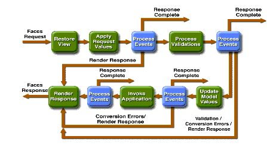

The Life Cycle of a JavaServer Faces Page
The life cycle of a JavaServer Faces page is similar to that of a JSP page: The client makes an HTTP request for the page, and the server responds with the page translated to HTML. However, because of the extra features that JavaServer Faces technology offers, the life cycle provides some additional services to process a page.
This section details the life cycle for the benefit of developers who need to know information such as when validations, conversions, and events are usually handled and what they can do to change how and when they are handled. Page authors don't necessarily need to know the details of the life cycle.
A JavaServer Faces page is represented by a tree of UI components, called a view. When a client makes a request for the page, the life cycle starts. During the life cycle, the JavaServer Faces implementation must build the view while considering state saved from a previous submission of the page. When the client submits a page, the JavaServer Faces implementation must perform several tasks, such as validating the data input of components in the view and converting input data to types specified on the server side. The JavaServer Faces implementation performs all these tasks as a series of steps in the life cycle.
Which steps in the life cycle are executed depends on whether or not the request originated from a JavaServer Faces application and whether or not the response is generated with the rendering phase of the JavaServer Faces life cycle. This section first explains the various life cycle scenarios. It then explains each of these life cycle phases using the
guessNumberexample.Request Processing Life Cycle Scenarios
A JavaServer Faces application supports two kinds of responses and two kinds of requests:
- Faces response: A servlet response that was created by the execution of the Render Response Phase of the request processing life cycle.
- Non-Faces response: A servlet response that was not created by the execution of the render response phase. An example is a JSP page that does not incorporate JavaServer Faces components.
- Faces request: A servlet request that was sent from a previously generated Faces response. An example is a form submit from a JavaServer Faces user interface component, where the request URI identifies the JavaServer Faces component tree to use for processing the request.
- Non-Faces request: A servlet request that was sent to an application component, such as a servlet or JSP page, rather than directed to a JavaServer Faces component tree.
These different requests and responses result in three possible life cycle scenarios that can exist for a JavaServer Faces application:
Scenario 1: Non-Faces Request Generates Faces Response
An example of this scenario occurs when clicking a hyperlink on an HTML page opens a JavaServer Faces page. To render a Faces response from a non-Faces request, an application must provide a mapping to
FacesServlet, which accepts incoming requests and passes them to the life cycle implementation for processing. Identifying the Servlet for Life Cycle Processing describes how to provide a mapping to theFacesServlet. When generating a Faces response, the application must create a new view, store it in theFacesContext, acquire object references needed by the view, and callFacesContext.renderResponse, which forces immediate rendering of the view by skipping to the Render Response Phase.Scenario 2: Faces Request Generates Non-Faces Response
Sometimes a JavaServer Faces application might need to redirect to a different web application resource or might need to generate a response that does not contain any JavaServer Faces components. In these situations, the developer must skip the rendering phase (Render Response Phase) by calling
FacesContext.responseComplete. TheFacesContextcontains all the information associated with a particular Faces request. This method can be invoked during the Apply Request Values Phase, Process Validations Phase, or the Update Model Values Phase.Scenario 3: Faces Request Generates Faces Response
This is the most common scenario for the life cycle of a JavaServer Faces application. It is also the scenario represented by the standard request processing life cycle described in the next section. This scenario involves a JavaServer Faces component submitting a request to a JavaServer Faces application utilizing the
FacesServlet. Because the request has been handled by the JavaServer Faces implementation, no additional steps are required by the application to generate the response. All listeners, validators and converters will automatically be invoked during the appropriate phase of the standard life cycle, which the next section describes.Standard Request Processing Life Cycle
The standard request processing life cycle represents scenario 3, described in the preceding section. Most users of JavaServer Faces technology don't need to concern themselves with the request processing life cycle. Indeed, JavaServer Faces technology is sophisticated enough to perform the processing of a page so that developers don't need to deal with complex rendering issues, such as state changes on individual components. For example, if the selection of a component such as a checkbox affects the appearance of another component on the page, JavaServer Faces technology will handle this event properly and will not allow the page to be rendered without reflecting this change.
Figure 17-4 illustrates the steps in the JavaServer Faces request-response life cycle.

Figure 17-4 JavaServer Faces Standard Request-Response Life Cycle
The life cycle handles both kinds of requests: initial requests and postbacks. When a user makes an initial request for a page, he or she is requesting the page for the first time. When a user executes a postback, he or she submits the form contained on a page that was previously loaded into the browser as a result of executing an initial request. When the life cycle handles an initial request, it only executes the restore view and render response phases because there is no user input or actions to process. Conversely, when the life cycle handles a postback, it executes all of the phases.
Restore View Phase
When a request for a JavaServer Faces page is made, such as when a link or a button is clicked, the JavaServer Faces implementation begins the restore view phase.
During this phase, the JavaServer Faces implementation builds the view of the page, wires event handlers and validators to components in the view, and saves the view in the
FacesContextinstance. TheFacesContextinstance contains all the information needed to process a single request. All the application's component tags, event handlers, converters, and validators have access to theFacesContextinstance.If the request for the page is an initial request, the JavaServer Faces implementation creates an empty view during this phase and the life cycle advances to the render response phase. The empty view will be populated when the page is processed during a postback.
If the request for the page is a postback, a view corresponding to this page already exists. During this phase, the JavaServer Faces implementation restores the view by using the state information saved on the client or the server.
The view for the
greeting.jsppage of theguessNumberexample would have theUIViewcomponent at the root of the tree, withhelloFormas its child and the rest of the JavaServer Faces UI components as children ofhelloForm.Apply Request Values Phase
After the component tree is restored, each component in the tree extracts its new value from the request parameters by using its
decodemethod. The value is then stored locally on the component. If the conversion of the value fails, an error message associated with the component is generated and queued onFacesContext. This message will be displayed during the render response phase, along with any validation errors resulting from the process validations phase.In the case of the
userNocomponent on thegreeting.jsppage, the value is whatever the user entered in the field. Because the object property bound to the component has anIntegertype, the JavaServer Faces implementation converts the value from aStringto anInteger.If any
decodemethods or event listeners calledrenderResponseon the currentFacesContextinstance, the JavaServer Faces implementation skips to the render response phase.If events have been queued during this phase, the JavaServer Faces implementation broadcasts the events to interested listeners.
If some components on the page have their
immediateattributes (see The immediate Attribute) set totrue, then the validation, conversion, and events associated with these components will be processed during this phase.At this point, if the application needs to redirect to a different web application resource or generate a response that does not contain any JavaServer Faces components, it can call
FacesContext.responseComplete.At the end of this phase, the components are set to their new values, and messages and events have been queued.
Process Validations Phase
During this phase, the JavaServer Faces implementation processes all validators registered on the components in the tree. It examines the component attributes that specify the rules for the validation and compares these rules to the local value stored for the component.
If the local value is invalid, the JavaServer Faces implementation adds an error message to the
FacesContextinstance, and the life cycle advances directly to the render response phase so that the page is rendered again with the error messages displayed. If there were conversion errors from the apply request values phase, the messages for these errors are also displayed.If any
validatemethods or event listeners calledrenderResponseon the currentFacesContext, the JavaServer Faces implementation skips to the render response phase.At this point, if the application needs to redirect to a different web application resource or generate a response that does not contain any JavaServer Faces components, it can call
FacesContext.responseComplete.If events have been queued during this phase, the JavaServer Faces implementation broadcasts them to interested listeners.
In the case of the
greeting.jsppage, the JavaServer Faces implementation processes the standard validator registered on theuserNoinputTexttag. It verifies that the data the user entered in the text field is an integer in the range 0 to 10. If the data is invalid or if conversion errors occurred during the apply request values phase, processing jumps to the render response phase, during which thegreeting.jsppage is rendered again, with the validation and conversion error messages displayed in the component associated with themessagetag.Update Model Values Phase
After the JavaServer Faces implementation determines that the data is valid, it can walk the component tree and set the corresponding server-side object properties to the components' local values. The JavaServer Faces implementation will update only the bean properties pointed at by an input component's value attribute. If the local data cannot be converted to the types specified by the bean properties, the life cycle advances directly to the render response phase so that the page is rerendered with errors displayed. This is similar to what happens with validation errors.
If any
updateModelsmethods or any listeners calledrenderResponseon the currentFacesContextinstance, the JavaServer Faces implementation skips to the render response phase.At this point, if the application needs to redirect to a different web application resource or generate a response that does not contain any JavaServer Faces components, it can call
FacesContext.responseComplete.If events have been queued during this phase, the JavaServer Faces implementation broadcasts them to interested listeners.
At this stage, the
userNoproperty of theUserNumberBeanis set to the local value of theuserNumbercomponent.Invoke Application Phase
During this phase, the JavaServer Faces implementation handles any application-level events, such as submitting a form or linking to another page.
At this point, if the application needs to redirect to a different web application resource or generate a response that does not contain any JavaServer Faces components, it can call
FacesContext.responseComplete.If the view being processed was reconstructed from state information from a previous request and if a component has fired an event, these events are broadcast to interested listeners.
The
greeting.jsppage from theguessNumberexample has one application-level event associated with theUICommandcomponent. When processing this event, a defaultActionListenerimplementation retrieves the outcome,success, from the component'sactionattribute. The listener passes the outcome to the defaultNavigationHandler. TheNavigationHandlermatches the outcome to the proper navigation rule defined in the application's application configuration resource file to determine which page needs to be displayed next. See Configuring Navigation Rules for more information on managing page navigation. The JavaServer Faces implementation then sets the response view to that of the new page. Finally, the JavaServer Faces implementation transfers control to the render response phase.Render Response Phase
During this phase, the JavaServer Faces implementation delegates authority for rendering the page to the JSP container if the application is using JSP pages. If this is an initial request, the components represented on the page will be added to the component tree as the JSP container executes the page. If this is not an initial request, the components are already added to the tree so they needn't be added again. In either case, the components will render themselves as the JSP container traverses the tags in the page.
If the request is a postback and errors were encountered during the apply request values phase, process validations phase, or update model values phase, the original page is rendered during this phase. If the pages contain
messageormessagestags, any queued error messages are displayed on the page.After the content of the view is rendered, the state of the response is saved so that subsequent requests can access it and it is available to the restore view phase.
In the case of the
guessNumberexample, if a request for thegreeting.jsppage is an initial request, the view representing this page is built and saved inFacesContextduring the restore view phase and then rendered during this phase. If a request for the page is a postback (such as when the user enters some invalid data and clicks Submit), the tree is rebuilt during the restore view phase and continues through the request processing life cycle phases.
All of the material in The J2EE(TM) 1.4 Tutorial is copyright-protected and may not be published in other works without express written permission from Sun Microsystems.